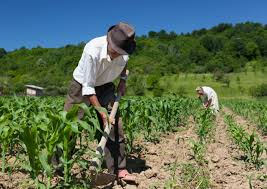

Aposentadoria Rural: Um Guia Completo
O que é a Aposentadoria Rural?
A aposentadoria rural é um benefício concedido pelo INSS aos trabalhadores que dedicaram boa parte de suas vidas às atividades agrícolas. Diferente da aposentadoria urbana, que exige contribuições mensais, a aposentadoria rural leva em consideração o tempo de trabalho efetivo no campo.
Quem tem direito à aposentadoria rural?
Para ter direito à aposentadoria rural, o trabalhador precisa comprovar um tempo mínimo de atividade rural e atingir a idade mínima exigida. Os principais beneficiados são:
- Trabalhadores rurais: Aqueles que exercem atividades agrícolas, como plantio, colheita, criação de animais, etc.
- Pescadores artesanais: Pessoas que vivem da pesca artesanal.
- Garimpeiros: Aqueles que trabalham na extração de minérios.
- Produtores rurais: Proprietários de terras que trabalham diretamente na produção.
- Quais os requisitos para solicitar a aposentadoria rural?
Os requisitos básicos para solicitar a aposentadoria rural são:
- Idade mínima: 60 anos para homens e 55 anos para mulheres.
- Tempo de contribuição: 15 anos de atividade rural comprovada.
- Como comprovar o tempo de trabalho rural?
A comprovação do tempo de trabalho rural pode ser feita através de diversos documentos, como:
- Declaração de vizinhos: Testemunhas que possam comprovar o tempo de trabalho no campo.
- Contratos de trabalho: Caso tenha trabalhado em propriedades rurais.
- Registros em associações rurais: Inscrição em sindicatos ou cooperativas.
- Blocos de notas de produtor rural: Documentos que registram a produção agrícola.
- Declaração de aptidão ao PRONAF: Programa Nacional de Fortalecimento da Agricultura Familiar.
Quais as vantagens da aposentadoria rural?
- Idade menor: A idade mínima para se aposentar na área rural é menor do que na urbana.
- Flexibilidade na comprovação: Existem diversas formas de comprovar o tempo de trabalho rural.
- Benefícios adicionais: Em alguns casos, o trabalhador rural pode ter direito a outros benefícios, como auxílio-doença e pensão por morte.
Como solicitar a aposentadoria rural?
Para solicitar a aposentadoria rural, o trabalhador deve procurar uma agência do INSS e apresentar toda a documentação necessária. É importante estar atento à legislação vigente, pois as regras podem sofrer alterações.
É importante ressaltar que a aposentadoria rural é um direito do trabalhador que dedicou sua vida ao campo. Ao conhecer seus direitos e os procedimentos para solicitar o benefício, é possível garantir uma renda segura para a aposentadoria